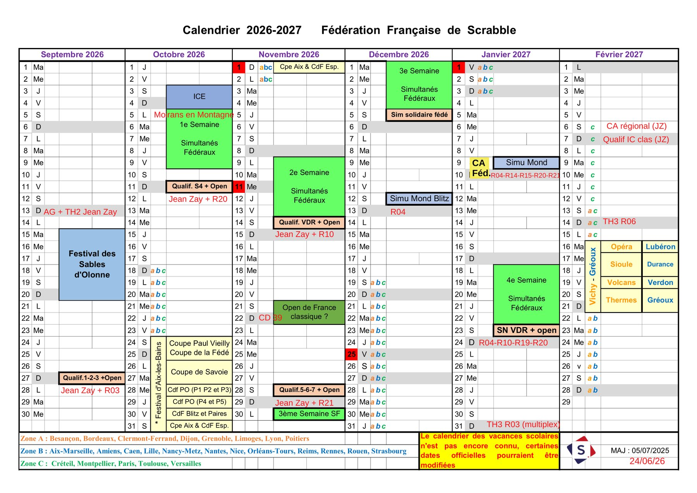
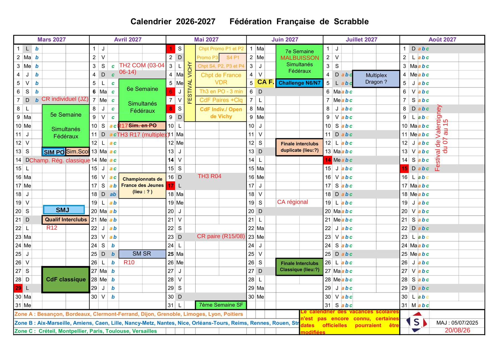

Accueil › Tournois & résultats
CompétitionsTournois & résultats
Qualifications, championnats et tournois homologués par la Fédération Française de Scrabble : le calendrier de la saison 2026-2027 à Besançon et en Franche-Comté.
Les rendez-vous à Besançon
Calendrier prévisionnel du comité Franche-Comté : les dates peuvent encore évoluer. Les rendez-vous passés sont masqués automatiquement.
Les sites indiqués entre parenthèses (« + club de … ») reprennent les mentions du calendrier du comité. Pour les horaires, tarifs d'inscription et modalités, contactez Frédéric Bartier — bartier.frederic@wanadoo.fr / 06 80 13 22 23.
Ailleurs en Franche-Comté
Une sélection des tournois, championnats et festivals organisés par les autres clubs du comité.
Le calendrier 2026-2027 de la saison
Le calendrier prévisionnel du comité Franche-Comté (Fédération Française de Scrabble). Les rendez-vous du comité figurent en rouge, « JZ » désigne la Salle Jean Zay à Besançon. Cliquez sur une image pour l'agrandir.


Calendrier provisoire transmis par le président du club : le calendrier des vacances scolaires n'est pas encore définitif et certaines dates officielles pourraient être modifiées.
Classement (extrait)
| Joueur | Série |
|---|---|
| Weill Jean-Baptiste | 2A |
| Bartier Frédéric | 2A |
| Arizzi Agnès | 3B |
| David Christiane | 4A |
| Lemeasle Eric | 4B |
| Villequez Jérôme | 5C |
| Grammont Philippe | 6C |
Le club compte 39 licencié(e)s cette saison, répartis sur l'ensemble des séries, de la 2A à la 7 — un éventail qui va du compétiteur aguerri au joueur loisir. Classement complet et actualisé sur le site de la Fédération Française de Scrabble.
Tournois précédemment organisés
| Date | Tournoi | Lieu |
|---|---|---|
| 01/02/2026 | Championnat Régional Franche-Comté open 2025-2026 (TH3) | Salle Jean Zay, 97 rue des Cras, Besançon |
| 18/01/2026 | Besançon TH3 (multiplex national à 6 clubs, étape du Grand Prix) | Salle Jean Zay, 97 rue des Cras, Besançon |
| 16/01/2022 | Besançon TH3 (multiplex à 6 clubs) | Salle polyvalente de la Malcombe, avenue François Mitterrand, Besançon |
D'autres tournois ont pu être organisés par le club au fil des saisons. L'historique complet des résultats, partie par partie, est consultable sur le site de la Fédération Française de Scrabble.